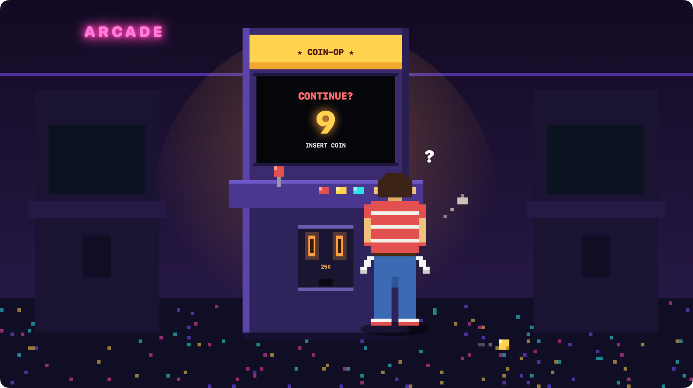
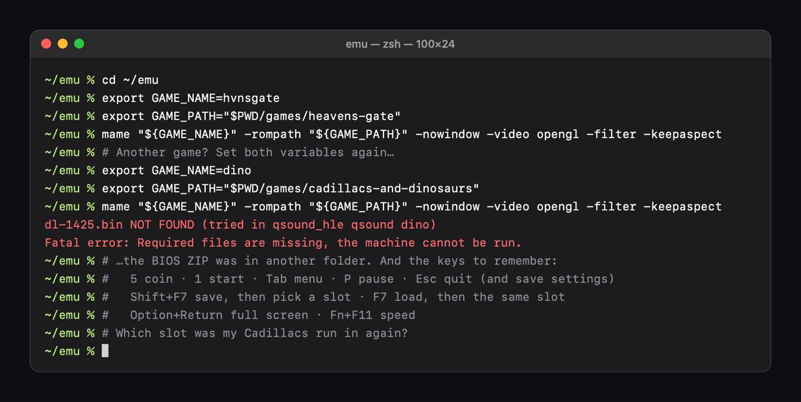
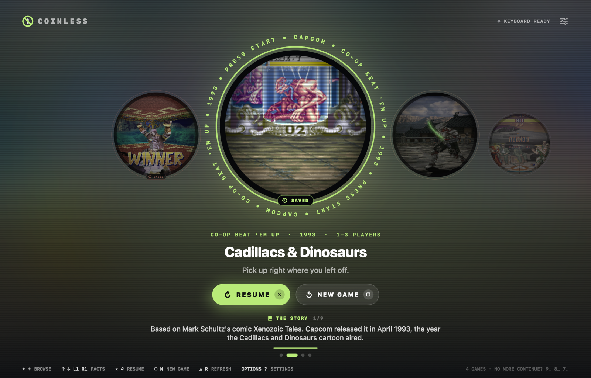

As a teenager, my favourite game was Heaven's Gate. It was the only fighting-game cabinet in my town, Poraj in Poland, in a little arcade next to the swimming pool that opened only in the summer. All my money went into that slot.
Years later I wondered: could I still play it? And how much pain would it be to get it running?

02 · Type a command
Easy to run. Hard to love.
Getting it running turned out to be surprisingly easy: MAME, the game's files, one command. So I went exploring the other staples, the ones I never had the chance, or enough coins in my pocket, to play.
Playing them was another story. Two variables and a long command for every game, a dozen keys to remember, save slots to keep track of, and cryptic errors whenever a BIOS file sat in the wrong folder.

03 · Press start
So I built the arcade I wanted.
A little bit of Codex and Claude Code came to the rescue, and now there's Coinless: a library you browse from the couch, where every game picks up right where you left it.

Your place, waiting. A saved game shows the moment you left it. Press ✕ to resume; no slots to remember.
Real pictures. Every round screen shows the game itself, captured by MAME from its attract mode.
Stories behind the games. Short, sourced facts turn over under the Play button: who made it, why, tips and combos.
Made for the couch. Everything works from a PS4 controller, in type that reads across the room.
Nothing to set up per game. BIOS files are found automatically; a missing one is named in plain words.
Terminal too../play dino uses the same settings and saves, and shows the command it runs.
04 · Continue?
Maybe, one day: every console.
Today Coinless speaks MAME. One day the same library could hold console games too, so Zelda sits next to Heaven's Gate, whatever the platform. No promises: it's a toy project, and the countdown is off.
Set it up
In a conversation.
Coinless is made to be set up by a coding agent. Clone it, open the folder in Claude Code, Codex or another agent, and ask.
$ git clone https://github.com/Alchemication/coinless.git
$ cd coinless
> Set up Coinless checks MAME and Apple's tools, builds the app, opens it> Add Heaven's Gate finds the MAME set, asks for its files, checks them,
adds its picture, facts and tips
Prefer doing it by hand? The README has the commands. Needs macOS 14 or later, MAME from Homebrew, and Apple's command-line tools. Coinless ships no games: you add the ones you want, using files you have the right to use.